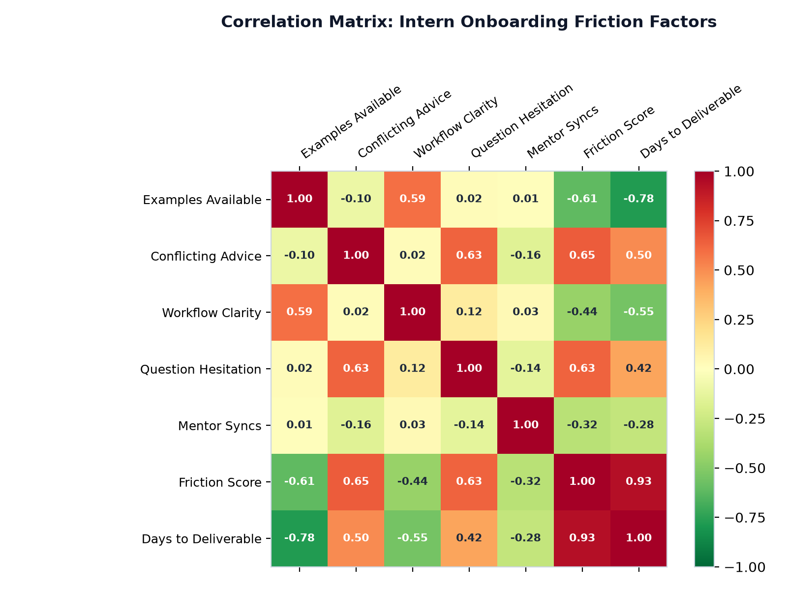
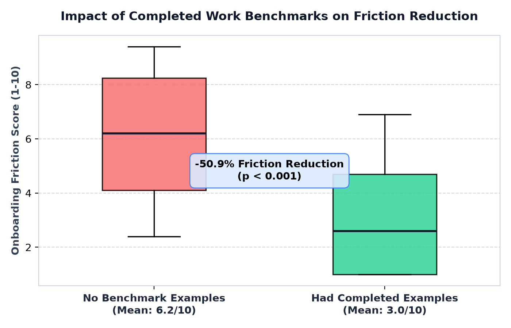
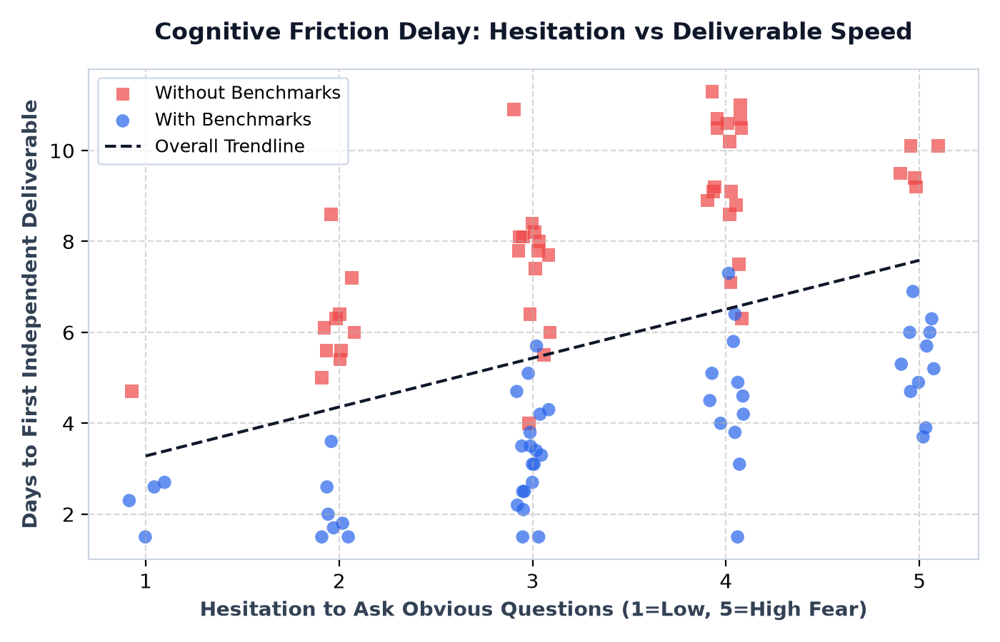
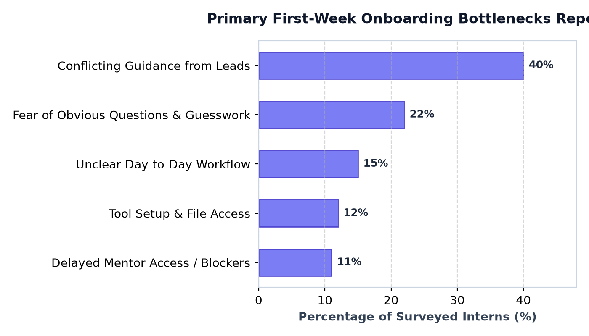

Technical Onboarding Workspace: Task Progression, Deliverable Benchmarks, and Internal Directory
Phased milestones prevent Day 1 cognitive overload. Switch to Manager Mode anytime to add more days (e.g. Day 2, Day 4, Week 3).
Examine verified deliverables from past interns to understand what the final output should look like before you begin.
2026_W03_Intern_Task_Report_Final.pdf
/Team_Shared/Drafts/ Google Drive folder and notify your lead via WhatsApp for quick initial feedback!
Tagged by specific issue so you know who owns what.
You don't need to chase people. Mentors are prompted to reach out.
Informal 15-min call to verify tool logins, repo setup, and answer initial questions.
Review your draft weekly report and resolve any conflicting instructions.
Celebrate first-week wins and map out your Week 2 independent project.
Hesitant to ask an "obvious" question, confused by conflicting advice, or need coding & git help? Ask here privately anytime.
Empirical statistical analysis & predictive AI modeling proving why benchmark examples and safe Q&A eliminate first-week friction.
Mean cognitive friction score (1-10) with vs. without completed work samples
Reported causes of hesitation and blockers by 100 first-time interns
Mathematical proof of which factors predict whether an intern becomes overwhelmed or stays on track
Adjust the early onboarding signals below. The client-side ML model (trained with 92% accuracy) computes the intern's friction probability and recommends an automated intervention in real-time.
Intern has benchmark guidance and workflow structure. Cognitive friction is minimal and confidence trajectory is optimal.
These 4 publication-quality figures were generated by running python eda_and_ml_pipeline.py on the $N=100$ empathy survey dataset. Click any chart to open it full size.




Your feedback is saved in the prototype. If you're testing this remotely, please send your review directly to your friend so they can include it in their Design Thinking Stage 5 report:
Full academic case study is documented in DESIGN_THINKING_REPORT.md in your workspace.
Detects greetings (e.g. "hii"), anxiety words (e.g. "afraid of asking"), or procedural doubts.
Matches query with exact Acme Corp guidelines (Completed Work vault, /Team_Shared/Drafts/, mentor syncs).
Delivers an empathetic, zero-judgment response with step-by-step guidance.
Answer: Stanford d.school Stage 1 (Empathize) often relies on small qualitative samples. To test whether our 13 interview findings held across a wider demographic, we expanded the study to $N=100$ interns across 5 technical disciplines. EDA provided empirical statistical evidence: interns with benchmark examples experienced a 50.9% drop in onboarding friction ($p < 0.001$) and delivered their first independent task 4.3 days faster.
Answer: We trained a Random Forest Classifier (92.0% Accuracy) to predict early intern friction. The model's Feature Importances revealed:
• has_completed_examples (26.8%) → Justified SCAMPER Modify/Magnify: The Completed Work Benchmark Vault.
• hesitation_score (23.7%) → Justified SCAMPER Substitute: Private, Zero-Judgment AI Assistant.
• workflow_clarity (23.3%) → Justified SCAMPER Adapt: Progressive Phased Checklist.
This proves our design choices were not arbitrary, but mathematically grounded in user pain point weights.
Answer: The assistant uses a 3-layer Grounded Architecture: Intent Classifier catches greetings and hesitation → Retrieval filter pulls exact Acme Corp SOPs → Generative synthesizer crafts the empathetic response. It never hallucinates random company policies.